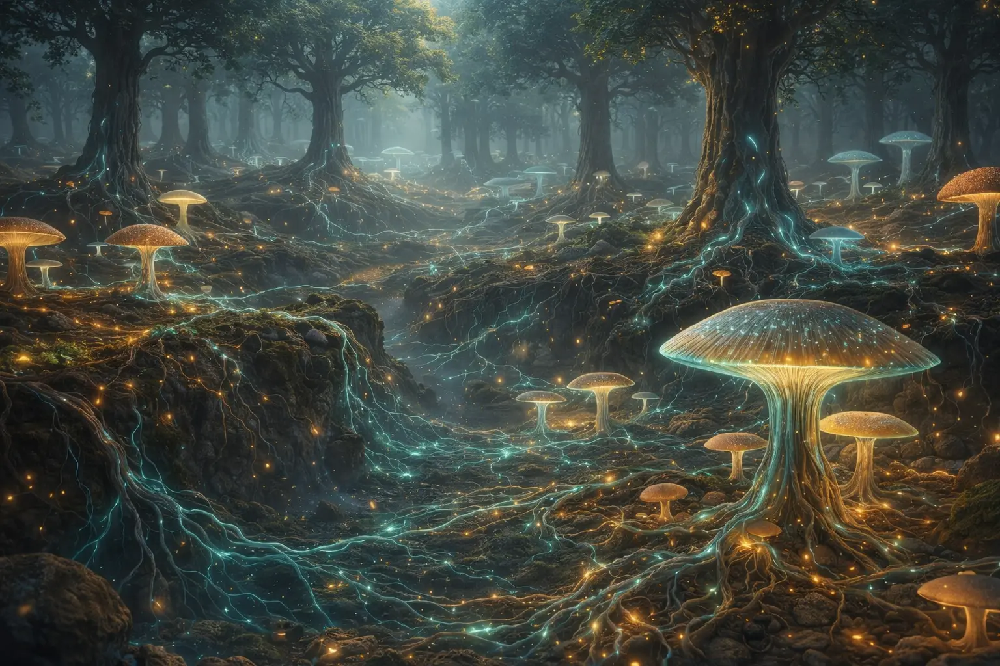

Fictional reviews demonstrating how the Fun-Gus universe would land across every demographic.

In an era of hyper-saturated children's programming, where every new show competes for eyeballs with louder colors and faster cuts, "Fun-Gus: The Forest Has WiFi" does something radical: it slows down. It looks at the dirt. And it finds, beneath that dirt, something extraordinary.
The cast of fungal characters — over a dozen, each based on a real species — is immediately lovable without being saccharine. Fun-Gus himself is the mentor figure every child deserves: patient, funny, and incapable of condescension. But it's Spora, the newborn spore who "doesn't know how to do anything yet," who becomes the show's emotional anchor.
And then there's Ms. Hawthorn. The children's teacher is, on the surface, exactly what she appears. But the show layers in hints — a robin that never leaves her shoulder, flowers that lean toward her, an agelessness in her eyes — that suggest something deeper. It's a masterclass in dual-audience storytelling.
Production values are stunning. If there's a criticism, the first episode introduces too many characters too quickly. But this is a minor quibble about a major achievement.
When I read the pitch — "kids shrink into an underground fungal network and meet talking mushrooms" — I expected something weird and niche. What I got was one of the most emotionally resonant pilots I've seen in children's television since the first season of "Bluey."
The animation is GORGEOUS. The Sillium sequences look like what would happen if Pixar designed a nature documentary.
But here's what surprised me most: the show trusts kids. It uses words like "mycorrhizae" and "symbiosis" and "hyphae" — and defines them through story, not flashcards. My 7-year-old watched the pilot and then spent 20 minutes telling me about how trees share food underground.
The character design deserves special mention. Each fungal character is based on a real species, and their personalities grow organically from real biology. It's biology-as-character-design, and it's brilliant.
"The rare show that makes you smarter and kinder at the same time."
— Variety"Pixar-level animation in service of genuine science education. An instant classic."
— Common Sense Media"Ms. Hawthorn is the most intriguing character on television right now, and she barely speaks."
— The Atlantic"My kids haven't stopped talking about mycelium. I consider this a complete victory."
— Slate, Parenting"Fun-Gus does for fungi what 'Finding Nemo' did for clownfish."
— NPRWe've watched the first three episodes four times each. My 6-year-old is OBSESSED. She calls herself "Spora" and tells everyone about the Wood Wide Web. During a hike last weekend, she crouched next to a mushroom and whispered, "Hi, are you part of the network?"
She's learning real vocabulary — hyphae, mycelium, symbiosis — and she USES it. Her kindergarten teacher told me she explained mycorrhizal networks during show-and-tell. The teacher had to look it up afterward.
I'm a middle school science teacher, and I've spent years looking for media that gets kids excited about biology without sacrificing accuracy. Fun-Gus nails it. The mycology is CORRECT. I've checked.
My son's favorite character is Lumos. He told me, "Dad, being brave means doing scary things even when you're glowing." I don't even know what to do with that except frame it.
Excellent show overall. Taking off one star only because the "shrinking" sequence in Episode 1 genuinely scared my 5-year-old. We paused and talked about it, and she was fine by the time Fun-Gus appeared.
Everything after that is pure magic. Fun-Gus is the most reassuring character on TV. And Spora's journey from "I can't do anything" to "I found my place" is genuinely moving.
Fun-Gus is my favorite. He's like if a mushroom was also a grandpa but not old, just nice. Spora is the best because she's scared but she does it anyway. I'm like Spora because I was scared on the first day of school but I did it anyway too.
My favorite part is when Puff explodes. He's SO FUNNY. I want a Puff toy that actually bursts (Mom says no).
I want to be a mycologist when I grow up. That's a mushroom scientist. Fun-Gus taught me that word.
I usually don't watch little kid shows but my sister made me watch Fun-Gus and it's actually really good. The animation is like movie-quality.
The science is real which is cool. I looked up mycorrhizal networks after watching and everything they said is true. Trees really do share food through fungus. That's wild.
Also I have a theory about Ms. Hawthorn. The flowers lean toward her. She hums a song nobody recognizes. An old lady says she "hasn't changed a bit." SHE'S DEFINITELY NOT HUMAN.
This show respects kids' intelligence and I appreciate that.
I like the round one. Puff. He goes POP and it's yellow. He's happy and I'm happy when he's happy. The scared shiny one is nice too. The purple old one talks slow.
I want to go in the ground with the mushrooms.
Scientific Accuracy: A — The show's representation of mycorrhizal networks, bioluminescence, and interspecies symbiosis is consistent with current peer-reviewed research. No significant factual errors identified.
Pedagogical Value: A — Employs a "story-first, science-embedded" model aligned with best practices in informal science education. Key vocabulary introduced contextually through character interaction.
Character-Science Integration: A+ — Most remarkable is that each character's personality, abilities, and story arc grow directly from real biology. The science IS the character. This makes science memorable because it's inseparable from characters children love.
Classroom Recommendation: Suitable for grades K–5. Aligns with NGSS standards for ecosystems, interdependent relationships, and structure/function in living organisms.